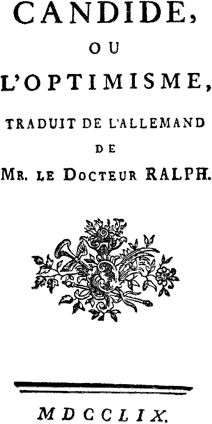

It's common to denigrate pessimism as defeatist; and while often overlooked, it is surprising to consider that it has any merit, let alone tradition. I admit it's not for everyone, but if you are disposed to dark humor or satire like me, then perhaps you are in the right place. I grew up enjoying Mark Twain as much as Joseph Heller or Kurt Vonnegut. Reading these authors' works made for enjoyable book reports. After High School, I found a certain type of revelry in the philosophical tradition. This revelry came from exposing commonly held assumptions (widely-held "truths"!) as groundless or questionable at best. From the ancient Greek schools -- Platonic, Cynic, Skeptic, Epicurean, Stoic -- to modern thinkers like Voltaire and Hume to more contemporary writers, there's plenty of material I'd like to laugh about while sharing and learning something new.
Pessimism isn't a canon of thought, generally. So this hobby of mine is to assemble works thematically as if they constituted a canon of thought. For instance, you can rattle off authors who are existentialists with some ease, whereas pessimists aren't so easily categorized. So: who are the pessimists? What is pessimism? Let's start with the Philosophical Pessimism article on Wikipedia. We'll take all their references and go searching for more. To do this hobby is to look for all such reputable references, check them out and add them to an organized list. Later you may actually find yourself reading from the list and organizing a rating system that differs from mine.
Philosophy might be characterized as a process rather than a static volume of books and articles. To find the Pessimists involves getting clear about a sufficient definition of Pessimism. While Wikipedia is a fine place to start, there are perhaps better resources. One of them is The Stanford Philosophy Encyclopedia. As your idea of Pessimism shifts, the organization of the list may also. Reading about a self-avowed pessimist named Arthur Schopenhauer would be another great place to begin working on a definition.
""by sketchesofdreams is licensed under CC BY-NC-ND 2.0


But as you read the responses to Schopenhauer (like this forum discussion), you may very well demote his works from the top of the list ever further down, or find it going back up again later. You can read the same text over after reading others and have a new interpretation. It's best to remain open to this kind of happy confusion. And also find the time to slowly, carefully read important texts after finding them.
"CIORAN, TYPEFACE" by Fernando Forero is licensed under CC BY-NC-ND 4.0


"CIORAN, TYPEFACE" by Fernando Forero is licensed under CC BY-NC-ND 4.0


""by sketchesofdreams is licensed under CC BY-NC-ND 2.0